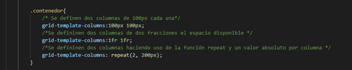
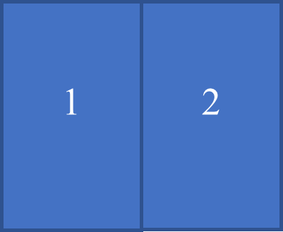
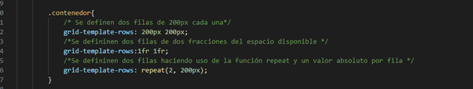
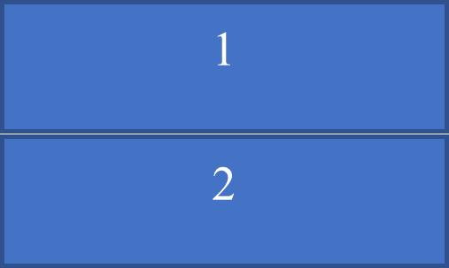
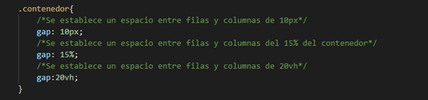
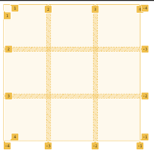

Propiedades CSS Grid
Las propiedades que se utilizan en css grid son unas útiles herramientas de posicionamiento que permiten darle una mayor estructura al documento HTML, estas propiedades también permiten ahorrar muchas líneas de CSS lo cual facilita y agiliza el diseño de páginas web.
Grid-template-columns
Esta propiedad permite definir las columnas dentro de una grilla hecha con css grid, la propiedad recibe valores absolutos y relativos para la definición de la propiedad, también se puede hacer uso de funciones que permite establecer de una forma más corta la cantidad de columnas.


Grid-template-rows
Esta propiedad permite definir las filas que tendrá la grilla, al igual que para establecer las columnas, se hace uso de valores absolutos, relativos y funciones.


Gap
La propiedad gap se utiliza para dar un espacio entre filas y columnas, los valores que se le puede asignar a la propiedad pueden ser relativos, absolutos y funciones.

